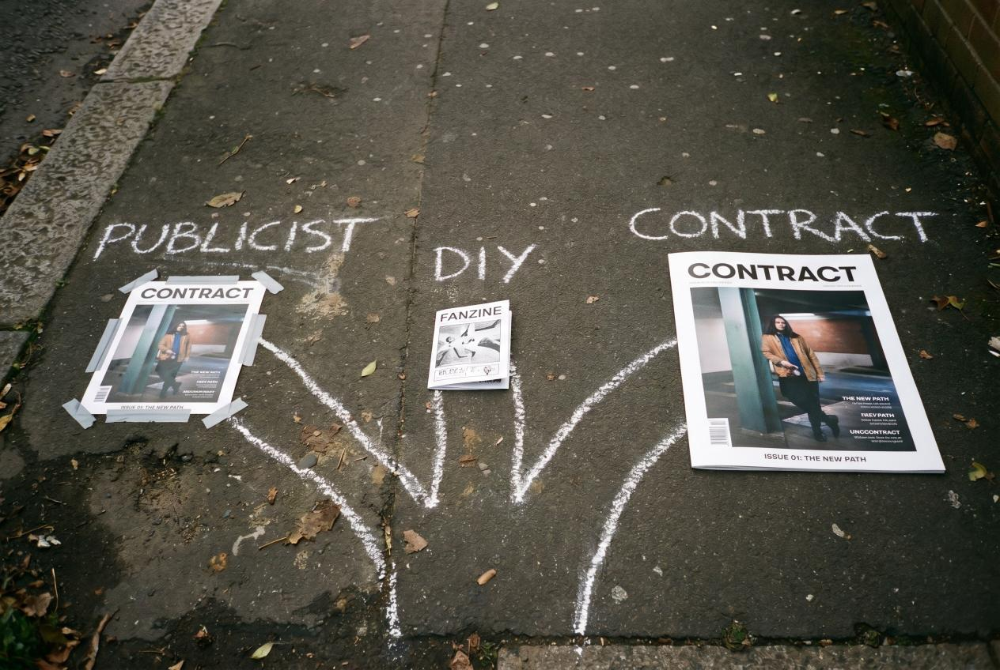

You've seen it on bestseller bios: "as featured in TIME," "Rolling Stone called this book…," "Closer Weekly's Book of the Month." You've also seen the gatekeeping advice: "build a platform first," "you need a publicist with relationships," "tier-1 magazines don't cover indie books."
Most of that advice is lazy and outdated. There are exactly three real paths for a self-published author to land in TIME, Rolling Stone, Closer Weekly, In Touch Weekly, Star Magazine, OK! Magazine, or Hollywood Life. This article walks through all three, with honest pricing, realistic timelines, and the trade-offs.
By the end, you'll know which path matches your budget and your tolerance for risk.
Path 1: The Traditional Publicist Route
This is the path your high-school career-day publishing book described. Hire a publicity firm. They have relationships with editors. They pitch your book. If the angle lands, you get a feature.
How it actually works
A book publicist runs what's called a media campaign: a 6–12 week effort where they pitch journalists, editors, and producers about your book. They customize the angle for each outlet — TIME wants a "this represents a cultural shift" hook; Rolling Stone wants a music or pop-culture connection; Closer Weekly wants a relatable human-interest narrative.
Realistic outcomes for a self-published debut author with no prior platform:
- Tier-1 placement (TIME, Rolling Stone, Vanity Fair): very rare. Maybe one in a hundred campaigns.
- Tier-2 placement (Closer, In Touch, Star, People digital): uncommon but possible with a strong hook
- Tier-3 placement (mid-size newspapers, niche magazines, podcasts): likely
- Zero placements: also common
The cost
According to Smith Publicity — one of the major book PR firms — a realistic 3-month mid-tier campaign costs $10,500–$18,000. A boutique solo publicist runs $4,000–$8,000 per project. A top-tier firm aiming at TIME/Rolling Stone level can charge $25,000–$40,000 for a multi-month campaign.
You pay this regardless of results. Industry-standard contracts protect the publicist's billable hours, not the author's outcomes.
When this path makes sense
You have at least one of:
- A genuine news hook (memoir tied to current events, debut by a celebrity-adjacent author, non-fiction with academic credentials)
- An existing platform (10K+ engaged social followers, prior media coverage, regular speaking or column work)
- A publisher co-funding the campaign with you
- A budget over $25,000 you can lose without it changing your decision to keep writing
For everyone else, this path's economics are brutal. Most self-published novelists who try it spend $10K+ and get a single regional newspaper mention.
Path 2: The Direct Pitch Route (DIY)

Some self-published authors land magazine features by pitching journalists directly. It happens. It's hard, and it's slow, but it's free.
How it actually works
You spend 4–8 weeks researching journalists at the outlets you want — TIME's culture desk, Rolling Stone's books editor, the relationships editor at Closer Weekly. You identify the specific people who'd plausibly cover your kind of book. You build a media list of 30–60 names with contact emails (Muck Rack, Rocketreach, journalist Twitter bios, masthead pages).
Then you write a custom pitch for each one — different angle for each outlet, mentioning recent articles they've written that connect to your book. Send. Wait. Follow up once after 7 days. Move on.
Realistic response rates
For unsolicited cold pitches from indie authors with no media kit, prior coverage, or platform: response rate around 1–3%, conversion to actual feature around 0.1–0.5%. You need to send a lot of pitches to land a few features.
This path is essentially what publicists do — but you're doing it without their relationships, faster reading-of-pitches, or credibility in the inbox.
When this path makes sense
You have:
- 8–12 hours/week for 6–12 weeks to dedicate to outreach
- A genuinely strong news hook (without one, response rates collapse to near zero)
- The temperament to handle 95%+ rejection or silence
- An author website and media kit already polished
For most self-published authors, the time cost is more than the publicist fee — without the relationships that make publicists somewhat effective.
Path 3: The Contractual Placement Route
This is the newer model and the one that has changed the math for self-published authors most dramatically over the last few years.
How it actually works
A publisher with standing distribution agreements with specific outlets sells you a guaranteed placement at a fixed price. You pay; the placement runs. There's no pitching, no campaign, no "we'll try." The agreement between the publisher and the magazine handles the editorial slot in advance.
VUGA Publishing operates this model. Standing agreements with Closer Weekly, In Touch Weekly, Star Magazine, OK! Magazine, Hollywood Life, plus premium add-ons for TIME and Rolling Stone UK. When you buy a package, the placements happen — guaranteed by contract. Money-back if any placement fails.
Available outlet tiers and pricing
- VUGA Bestseller package — $7,997. Three full editorial articles in closerweekly.com, intouchweekly.com, starmagazine.com. Plus 10 placements in the VUGA Enterprises 104-outlet digital network. Cost-per-placement: ~$615.
- VUGA Authority package — $14,997. All of Bestseller plus full editorial articles in okmagazine.com and hollywoodlife.com. Five major U.S. celebrity magazines guaranteed.
- Premium add-ons:
- Rolling Stone UK ($8,997) — featured editorial article on rollingstone.co.uk, the UK edition of Rolling Stone. Founded 1967, iconic music and culture brand.
- TIME ($14,997) — featured editorial article on time.com. The newsmagazine that's covered every U.S. president since Coolidge. Indie authors don't get into TIME through traditional channels — this is the only publicly-priced contractual access we know of.
- TIME + Rolling Stone UK Bundle ($19,997) — both add-ons, saves $3,997 vs purchased separately.
A debut author who wanted all five major celebrity magazines + TIME + Rolling Stone UK would stack Authority + the Bundle for $34,994 total. That's seven guaranteed tier-1/tier-2 magazine features. The same outcome via traditional publicists — if achievable at all — would cost $40K–$80K and probably take 6–12 months of campaign effort.
What you get in writing
Every placement is contractually guaranteed. The terms specifically require:
- The placement runs on the named magazine's actual digital domain (not a syndication clone)
- The editorial article is original, full-length (600–1,200 words)
- The article includes a backlink to your retailer page
- Permanent indexed URL (not a temporary pre-press page)
- Delivery within the stated window
If any element fails, full money-back on that placement, or — at your election — re-placement on an outlet of equivalent or greater tier within 30 days at no cost.
When this path makes sense
You want certainty about what you're paying for. You don't want to spend 6 months running a speculative campaign or $20K hoping a publicist's contacts come through. You're treating book PR like any other purchase: defined product, defined price, contractual guarantee.
For most self-published authors with a $5K–$50K marketing budget, this path produces dramatically better ROI than the publicist route — because the failure mode (no placement) doesn't exist.
Picking Your Path
Here's the honest decision tree:
You have a strong news hook + existing platform + $25K+ to lose → Hire a top-tier traditional publicist. The relationships and editorial respect they bring can land coverage that contractual placements can't.
You have a strong hook + 12 weeks of free time + thick skin → DIY pitching. Free except your time. Realistic if you're a strong writer comfortable with sustained rejection.
You want guaranteed coverage at a known price → Contractual placement. The math works for indie authors in a way the publicist route hasn't for two decades.
You have under $5K and no platform → Don't hire a publicist or buy press. Spend the money on a great cover, a hooky blurb, and an ARC program to build reviews. Press without a converting Amazon page is wasted.
What About Sample Coverage?
If you want to see what a guaranteed editorial placement actually looks like before committing $7K+, the VUGA $97 Trial places one editorial article on a real outlet in the network within 7 days. You see the writing, the page, the indexed URL, and the backlink quality. The $97 credits toward any larger package within 30 days, so if you continue, the trial is effectively free.
This is mostly useful for authors who've never seen what a real magazine feature looks like for their book and want to evaluate before committing real money.
The Honest Bottom Line
Getting a self-published book into major magazines was effectively impossible for most indie authors a decade ago. Either you had a publicist with relationships (and $30K), or you didn't get features.
Three things have changed:
- The traditional publicist economics still work poorly for indie authors — that hasn't changed
- DIY pitching still works for a few authors with strong hooks — also unchanged
- Contractual placements at fixed prices now exist for tier-1 and tier-2 outlets — this is new, and it's why the math changed
Pick the path that matches your situation honestly. If the answer is contractual placement, browse VUGA author packages. If it's DIY or a publicist, those paths are still real — and harder than the marketing makes them sound.
Sources for this article:
- Smith Publicity, "What Can You Expect to Pay for Your Book Publicity Campaign"
- Page 1 Media, "What Does a Freelance Book Publicist Cost"
- Kindlepreneur, "How Much Does It Cost to Publish a Book"
- IndieAuthor Magazine, "A Journalist's Guide to the Perfect Press Release"
- Reedsy, "How Much Does It Cost to Self-Publish a Book in 2026"
Image generation prompts (Gemini Nano Banana Pro)
Hero image (1600×900, JPG):
An overhead shot of seven glossy magazine covers fanned out on a black marble surface — TIME-style with red border, Rolling Stone-style with bold typography, Closer Weekly-style celebrity weekly, In Touch, Star Magazine, OK!, Hollywood Life. Each cover features a different stylized author portrait. Centered: a single hardcover book sitting on top of all of them. Soft overhead studio lighting, dramatic shadows. Editorial fashion photography. Color palette: black, white, deep red. Ultra-realistic, 16:9 aspect ratio. --ar 16:9 --style raw
Inline image 1 — three paths visualization (1200×800):
A conceptual photograph: three diverging paths drawn in chalk on a sidewalk, labeled "PUBLICIST", "DIY", "CONTRACT" — each leading to a different sized version of the same magazine. The CONTRACT path leads to the largest, most polished magazine. Soft natural light. Editorial conceptual photography, slight overhead angle. --ar 3:2
Inline image 2 — TIME magazine red border (1600×900):
A close-up macro photograph of the iconic red border of a TIME-style magazine cover (do NOT include the actual TIME logo). The thick red frame surrounds a soft-focus background suggesting a portrait. Studio lighting, glossy paper texture catching light. Color palette: deep red, cream, black. Editorial product photography. --ar 16:9 --style raw